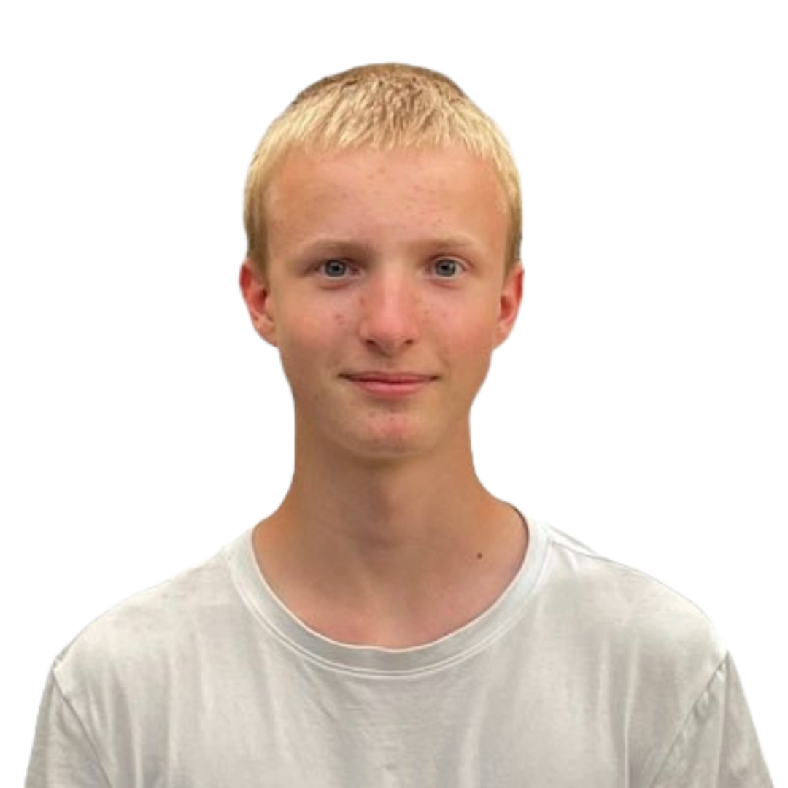

Zdravím, jsem David.
Rád vytvářím solidní a škálovatelné frontendové produkty s vynikající uživatelskou zkušeností.
Vysoce kvalifikovaný v progresivním vylepšování, softwaru.
Prokázané zkušenosti ve frontendovém developmentu.

Design
Nejsem typický designér sedící za Illustratorem a upravující pixely, já upravuji pouze soubory css. Najdete mě ponořeného do stylesheetů, ladicího velikosti písma a přemýšlejícího nad layouty (~_^).
Engineering
Při vytváření pythonových aplikací jsem schopen dodat rychlá a odolná řešení optimalizovaná pro škálování — výkon a funkčnost jsou mími prioritami